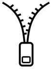
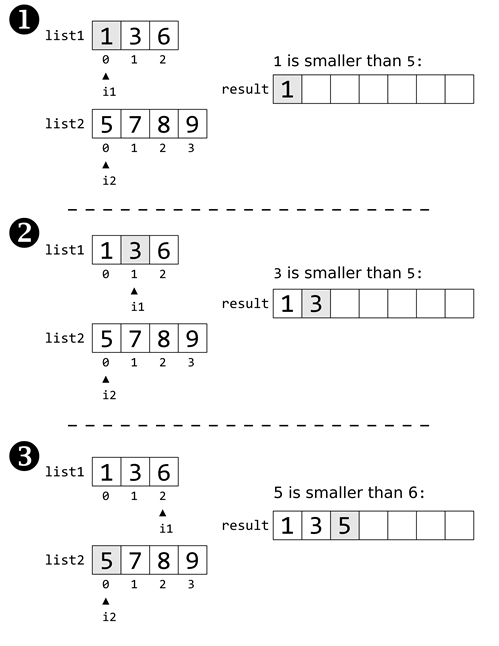

Prev - #39 Collatz Sequence | Table of Contents | Next - #41 ROT 13 Encryption
mergeTwoLists([1, 3, 6], [5, 7, 8, 9]) → [1, 3, 5, 6, 7, 8, 9]

One of the most efficient sorting algorithms is the merge sort algorithm. Merge sort has two phases: the dividing phase and the merge phase. We won’t dive into this advanced algorithm in this book. However, we can write code for the second half: merging two pre-sorted lists of integers into a single sorted list.
Exercise Description
Write a mergeTwoLists() function with
two parameters list1 and list2.
The lists of numbers passed for these parameters are already in sorted order
from smallest to largest number. The function returns a single sorted list of
all numbers from these two lists.
You could write this function in one line of code by using
Python’s sorted() function:
return sorted(list1 + list2)
But this would defeat the purpose of the exercise, so don’t use
the sorted() function or sort()
method as part of your solution.
These Python assert statements stop
the program if their condition is False. Copy them
to the bottom of your solution program. Your solution is correct if the following
assert statements’ conditions are all True:
assert mergeTwoLists([1, 3, 6], [5, 7, 8, 9]) == [1, 3, 5, 6, 7, 8, 9]
assert mergeTwoLists([1, 2, 3], [4, 5]) == [1, 2, 3, 4, 5]
assert mergeTwoLists([4, 5], [1, 2, 3]) == [1, 2, 3, 4, 5]
assert mergeTwoLists([2, 2, 2], [2, 2, 2]) == [2, 2, 2, 2, 2, 2]
assert mergeTwoLists([1, 2, 3], []) == [1, 2, 3]
assert mergeTwoLists([], [1, 2, 3]) == [1, 2, 3]
Try to write a solution based on the information in this description. If you still have trouble solving this exercise, read the Solution Design and Special Cases and Gotchas sections for additional hints.
Prerequisite concepts: lists, while
loops, Boolean operators, append(), for loops, range() with two
arguments, len()
Solution Design
The lists of integers, already in sorted order, are passed to the
function as parameters list1 and list2. The algorithm begins with two variables, i1 and i2, which both begin at
index 0 of their respective lists. We also create a
blank list in a variable named result which stores
the merged results of the two lists.
Inside of a while loop, the code does
the following:
·
Look at the numbers that i1 and i2 point to.
·
Append the smaller of the two numbers to result.
·
If i1’s number was appended, increment
i1 to point to the next number in list1. Otherwise, increment i2
to point to the next number in list2.
·
Repeat until either i1 or i2 has gone past the end of their list.
For example, Figure 40-1 shows the first three iterations of the
loop when merging lists [1, 3, 6] and [5, 7, 8, 9].

Figure 40-1: The first three iterations of the loop that merges two lists.
Think of this code as like an asymmetrical zipper: the i1 and i2 variables keep moving
right along their respective lists, appending their values to result. When
either i1 or i2 reaches
the end of their list, the rest of the other list is appended to result. This result list
contains all of the numbers in list1 and list2 in sorted order, so the function returns it.
Special Cases and Gotchas
Keep in mind that while the list1 and list2 parameters must be sorted lists, they aren’t
required to be the same length.
If either of these list arguments to mergeTwoLists()
isn’t sorted, the function will return a merged list that is also not in sorted
order. For this exercise, however, we’ll assume that mergeTwoLists()
is always called with valid arguments.
Now try to write a solution based on the information in the previous sections. If you still have trouble solving this exercise, read the Solution Template section for additional hints.
Solution Template
Try to first write a solution from scratch. But if you have difficulty, you can use the following partial program as a starting place. Copy the following code from https://invpy.com/mergetwolists-template.py and paste it into your code editor. Replace the underscores with code to make a working program:
def mergeTwoLists(list1, list2):
# Create an empty list to hold the final sorted results:
result = ____
# Start i1 and i2 at index 0, the start of list1 and list2:
i1 = ____
i2 = ____
# Keeping moving up i1 and i2 until one reaches the end of its list:
while i1 < len(____) and ____ < len(list2):
# Add the smaller of the two current items to the result:
if list1[____] < list2[____]:
# Add list1's current item to the result:
result.append(____[i1])
# Increment i1:
i1 += ____
else:
# Add list2's current item to the result:
result.append(____[i2])
# Increment i2:
i2 += ____
# If i1 is not at the end of list1, add the remaining items from list1:
if i1 < len(____):
for j in range(i1, len(list1)):
result.append(____[j])
# If i2 is not at the end of list2, add the remaining items from list2:
if i2 < len(____):
for j in range(i2, len(list2)):
result.append(____[j])
# Return the merged, sorted list:
return result
The complete solution for this exercise is given in Appendix A and https://invpy.com/mergetwolists.py. You can view each step of this program as it runs under a debugger at https://invpy.com/mergetwolists-debug/.
Further Reading
Merge sort uses this “merge two sorted lists into a single sorted list” behavior as a step in its algorithm. You can learn more about merge sort and other recursive algorithms from my book, “The Recursive Book of Recursion.” The full book is freely available under a Creative Commons license at https://inventwithpython.com/recursion/.
Prev - #39 Collatz Sequence | Table of Contents | Next - #41 ROT 13 Encryption